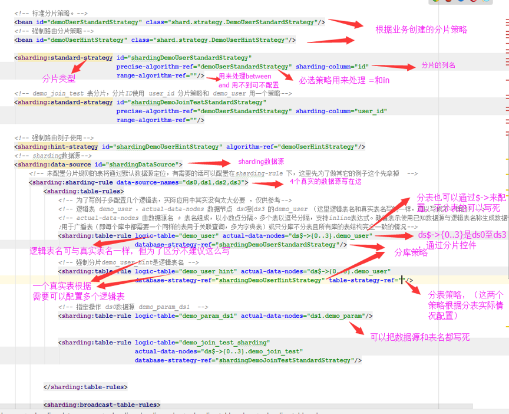
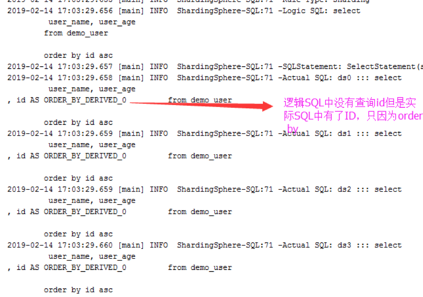

[TOC]
Sharding-JDBC定位为轻量级Java框架，在Java的JDBC层提供的额外服务。它使用客户端直连数据库，以jar包形式提供服务，无需额外部署和依赖，可理解为增强版的JDBC驱动，完全兼容JDBC和各种ORM框架。
Sharding-JDBC适用于：
- 任何基于Java的ORM框架，如：JPA, Hibernate, Mybatis, Spring JDBC Template或直接使用JDBC。
- 基于任何第三方的数据库连接池，如：DBCP, C3P0, BoneCP, Druid, HikariCP等。
- 支持任意实现JDBC规范的数据库，目前支持MySQL，Oracle，SQLServer和PostgreSQL。
<!-- sharding jdbc 开始-->
<dependency>
<groupId>io.shardingsphere</groupId>
<artifactId>sharding-core</artifactId>
<version>${sharding.version}</version>
</dependency>
<dependency>
<groupId>io.shardingsphere</groupId>
<artifactId>sharding-jdbc-spring-namespace</artifactId>
<version>${sharding.version}</version>
</dependency>
<!-- 如果不配置分布式事务的话配置上边两个就够了 -->
<!-- 分布式事务引用依赖-->
<dependency>
<groupId>io.shardingsphere</groupId>
<artifactId>sharding-transaction-2pc-xa</artifactId>
<version>${sharding.version}</version>
</dependency>
<dependency>
<groupId>io.shardingsphere</groupId>
<artifactId>sharding-transaction-spring</artifactId>
<version>${sharding.version}</version>
</dependency>
<!-- sharding jdbc 结束-->
<!--AspectJ AOP支持 -->
<dependency>
<groupId>org.aspectj</groupId>
<artifactId>aspectjweaver</artifactId>
<version>${aspectjweaver.version}</version>
</dependency>
先配置数据源
也可以配置读写分离
以下配置是ds0和ds1两个数据库的主和从一共四个数据源。
parentDs 是数据源公共的配置，抽出去以免写重复代码。
<!-- ds0的主-->
<bean id="ds0_master" class="com.alibaba.druid.pool.DruidDataSource" destroy-method="close" parent="parentDs">
<property name="driverClassName" value=""/>
<property name="url" value=""/>
</bean>
<!-- ds0的从-->
<bean id="ds0_slave" class="com.alibaba.druid.pool.DruidDataSource" destroy-method="close" parent="parentDs">
<property name="driverClassName" value=""/>
<property name="url" value="${sharding.connection.url.0}"/>
</bean>
<!-- ds1的主-->
<bean id="ds1_master" class="com.alibaba.druid.pool.DruidDataSource" destroy-method="close" parent="parentDs">
<property name="driverClassName" value=""/>
<property name="url" value="${sharding.connection.url.1}"/>
</bean>
<!-- ds1的从-->
<bean id="ds1_slave" class="com.alibaba.druid.pool.DruidDataSource" destroy-method="close" parent="parentDs">
<property name="driverClassName" value=""/>
<property name="url" value="${sharding.connection.url.1}"/>
</bean>
只配置主从不配置分库分表的情况如下，如果要配置分库分表则不需要下面这个配置。
master-data-source-name 是主数据源ID
slave-data-source-names 是从数据源ID
<master-slave:data-source id="masterSlaveDataSource" master-data-source-name="ds0_master, ds1_master" slave-data-source-names="ds0_slave, ds1_slave " >
<master-slave:props>
<prop key="sql.show">${sql_show}</prop>
<prop key="executor.size">10</prop>
<prop key="foo">bar</prop>
</master-slave:props>
</master-slave:data-source>
如果读写分离和分库分表一起使用的话把主从路由配置到 shardingdata-source下就可以了。
sharding:master-slave-rule 的 id 就是配置出来的逻辑的数据源的名称，如果多个从的话还可以通过配置strategy-ref来配置负载均衡。
master-data-source 配置的是主库数据源ID 。
slave-data-source 配置的是从库数据源ID，多个以逗号分开。
<!-- sharding数据源-->
<sharding:data-source id="shardingDataSource">
<!-- 读写分离的话要把所有的主从数据源都写在这里-->
<sharding:sharding-rule
data-source-names="ds0_master,ds0_slave,ds1_master,ds1_slave ">
<!-- 读写分离的路由 一主一从配置 strategy-ref -->
<sharding:master-slave-rules>
<sharding:master-slave-rule id="ds0" master-data-source-name="ds0_master" slave-data-source-names="ds0_slave"/>
<sharding:master-slave-rule id="ds1" master-data-source-name="ds1_master" slave-data-source-names="ds1_slave"/>
</sharding:master-slave-rules>
<!-- 读写分离配置 结束-->
<sharding:table-rules>
<!— 这里是分库分表路由的配置 -->
</sharding:table-rules>
<sharding:binding-table-rules>
<!—- 绑定表的配置 -->
</sharding:binding-table-rules>
</sharding:sharding-rule>
<sharding:props>
<!-- 显示SQL -->
<prop key="sql.show">true</prop>
</sharding:props>
</sharding:data-source>
Sharding-JDBC提供了5种分片策略。由于分片算法和业务实现紧密相关，因此Sharding-JDBC并未提供内置分片算法，而是通过分片策略将各种场景提炼出来，提供更高层级的抽象，并提供接口让应用开发者自行实现分片算法。
标准分片策略。提供对SQL语句中的=, IN和BETWEEN AND的分片操作支持。StandardShardingStrategy只支持单分片键，提供PreciseShardingAlgorithm和RangeShardingAlgorithm两个分片算法。PreciseShardingAlgorithm是必选的，用于处理=和IN的分片；RangeShardingAlgorithm是可选的，用于处理BETWEEN AND分片，如果不配置RangeShardingAlgorithm，SQL中的BETWEEN AND将按照全库路由处理。
复合分片策略。提供对SQL语句中的=, IN和BETWEEN AND的分片操作支持。ComplexShardingStrategy支持多分片键，由于多分片键之间的关系复杂，因此Sharding-JDBC并未做过多的封装，而是直接将分片键值组合以及分片操作符交于算法接口，完全由应用开发者实现，提供最大的灵活度。
Inline表达式分片策略。使用Groovy的Inline表达式，提供对SQL语句中的=和IN的分片操作支持。InlineShardingStrategy只支持单分片键，对于简单的分片算法，可以通过简单的配置使用，从而避免繁琐的Java代码开发，如: tuser${user_id % 8} 表示t_user表按照user_id按8取模分成8个表，表名称为t_user_0到t_user_7。
通过Hint而非SQL解析的方式分片的策略。
不分片的策略。
标准分片配置
<!-- 标准分片策略。-->
<bean id="demoUserStandardStrategy" class="shard.strategy.DemoUserStandardStrategy"/>
<sharding:standard-strategy id="shardingDemoUserStandardStrategy"
precise-algorithm-ref="demoUserStandardStrategy" sharding-column="id"
range-algorithm-ref=""/>
DemoUserStandardStrategy标准分片要实现 PreciseShardingAlgorithm 接口，doSharding的两个参数一个是所有数据源的cllection.另一个参数是执行SQL时传过来的分片的值。
/**
* 根据ID取
* 标准分片策略
* 用于处理=和IN的分片
* @author yulonggao
* @date 2019/1/31 14:35
*/
@Slf4j
public class DemoUserStandardStrategy implements PreciseShardingAlgorithm<Long> {
@Override
public String doSharding(Collection<String> collection, PreciseShardingValue<Long> preciseShardingValue) {
//这个里边有异常会被处理掉，然后导致拿不到分片。但出异常一般是业务代码写错了。
//每条指定分片的操作都会调用此方法，如果是in 条件查询的话每个值会调用一次此方法，如果是批量插入也是每一条都要调用一次进行分片
log.info("DemoUserStandardStrategy_preciseShardingValue={}", preciseShardingValue);
Long suffix = preciseShardingValue.getValue() % 4;
log.info("suffix={}", suffix);
final String targetDb = String.valueOf(Math.abs(suffix.intValue()));
String shardingValue = collection.stream().filter(p -> p.endsWith(targetDb)).findFirst().get();
log.info("preciseShardingValue={},shardingValue={}", preciseShardingValue, shardingValue);
return shardingValue;
}
强制分片
<!-- 强制路由分片策略-->
<bean id="demoUserHintStrategy" class="shard.strategy.DemoUserHintStrategy"/>
<!-- 强制路由例子使用-->
<sharding:hint-strategy id="shardingDemoUserHintStrategy" algorithm-ref="demoUserHintStrategy"/>
DemoUserHintStrategy 的Java 如下，强制分片要实现HintShardingAlgorithm接口。
/**
* DemoUserHint强制路由分片策略,其实可以共用，只是例子
* @author yulonggao
* @date 2019/1/31 14:35
*/
@Slf4j
public class DemoUserHintStrategy implements HintShardingAlgorithm {
@Override
public Collection<String> doSharding(Collection<String> availableTargetNames, ShardingValue shardingValue) {
//availableTargetNames 这个参数是所有的dataSource的集合，shardingValue是HintManager传过来的分片信息
log.info("DemoUserHintStrategy_availableTargetNames={}", availableTargetNames);
log.info("DemoUserHintStrategy_shardingValue={}", shardingValue);
ListShardingValue listShardingValue = (ListShardingValue) shardingValue;
Collection shardingValueList = listShardingValue.getValues();
//因为调用的时候分片是直接传的 DataSource的名称，所以直接返回就可以了，如果传其它值则要加业务逻辑进行分片筛选
//返回结果只能是availableTargetNames 里边所包含的
return shardingValueList;
}
}
生成分部式ID的配置，生成主键的类要实现KeyGenerator接口。
<!—主键生成 -->
<bean id="keyId" class="shard.key.DefaultKeyGenerator"/>

把下面这行代码配置在spring里，shardingTransaction.xml 是jar包里边带的。
文件的源码只有两行配置：
<bean id="transactionManager"
class="org.springframework.jdbc.datasource.DataSourceTransactionManager">
<property name="dataSource" ref="shardingDataSource"></property>
</bean>
<tx:annotation-driven transaction-manager="transactionManager"/>
<!-- 事务支持-->
<import resource="classpath:META-INF/shardingTransaction.xml"/>
使用注解配置事务要同时使用ShardingTransactionType和Transactional两个注解。
/**
* 注意：@ShardingTransactionType需要同Spring的@Transactional配套使用，事务才会生效。
* @param param
* @return
*/
@ShardingTransactionType(TransactionType.XA)
@Transactional(rollbackFor = Exception.class)
@Override
public int addParam(DemoParam param) {
log.info("addParam-param={}", param);
return demoParamDao.addParam(param);
}
完全支持非跨库事务，例如：仅分表或分库但是路由的结果在单库中。
完全支持因逻辑异常导致的跨库事务。例如：同一事务中跨两个库更新，更新完毕后，抛出空指针，则两个库的内容都能回滚。
支持数据库字段约束造成的回滚。
关于order by 排序，如果排序的字段不在查询结果中，生成的SQL也会被带上，但结果不返回给你。 不支持因网络、硬件异常导致的跨库事务。例如：同一事务中跨两个库更新，更新完毕后、未提交之前，第一个库死机，则只有第二个库数据提交。

九、参考文档